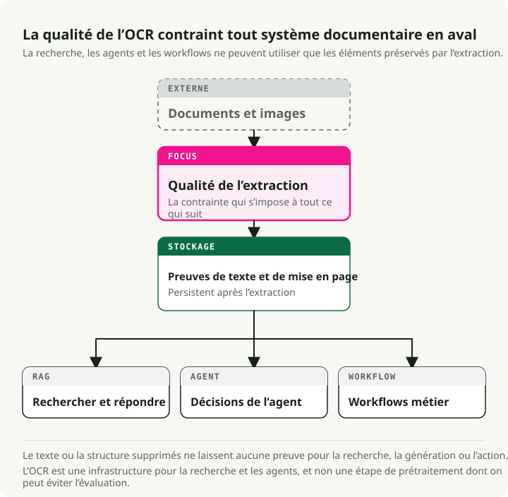
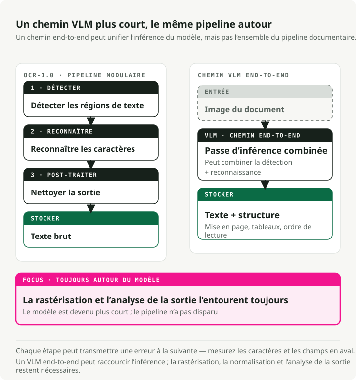
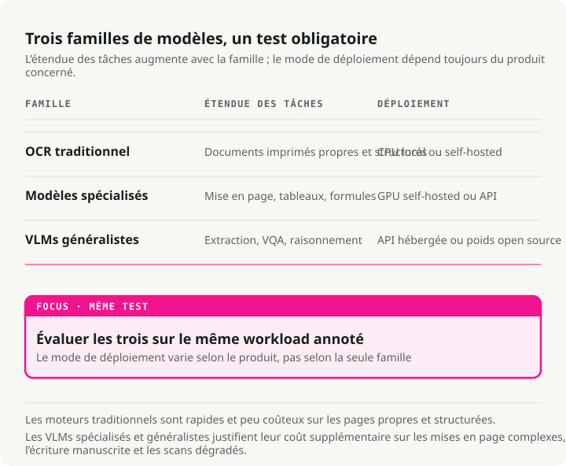
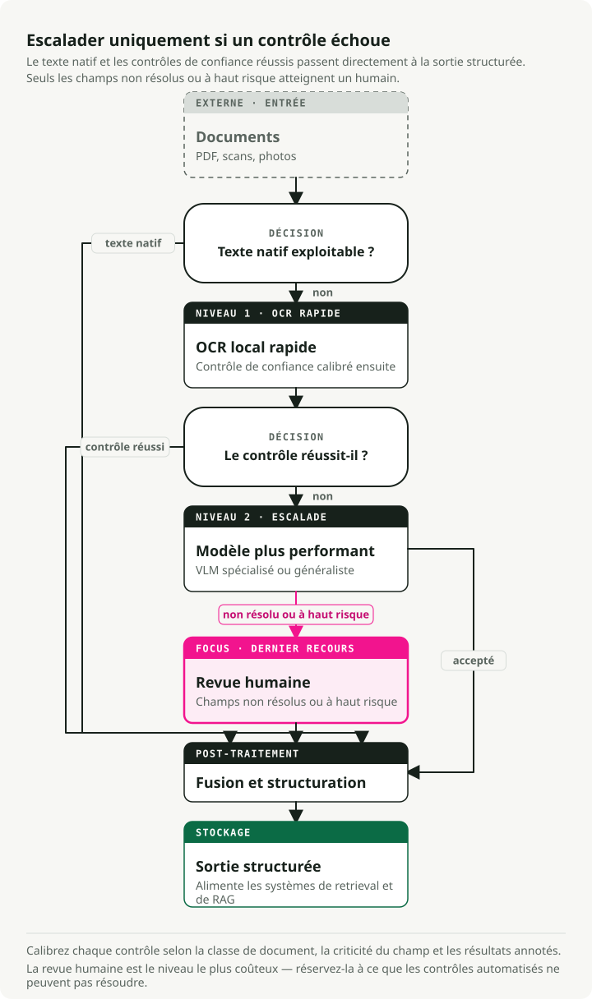

Traduction automatique
Cet article a été traduit automatiquement depuis la version originale en anglais.
Le guide définitif de l’OCR en 2026 : des pipelines aux VLM
Le modèle en tête du benchmark OCR le plus populaire arrive presque dernier quand des utilisateurs réels jugent la qualité. Le domaine évolue si vite que les benchmarks n’ont pas suivi — et l’OCR compte plus qu’avant, car chaque pipeline RAG et chaque assistant documentaire doivent d’abord faire passer le texte par cette étape.
Les Vision-Language Models (VLM) dominent l’extraction de texte sur les documents complexes, avec un Character Error Rate (CER) 3 à 4× plus faible que les moteurs traditionnels sur les scans bruités, les reçus et le texte déformé. Sur le classement OCR Arena au début de 2026, Gemini 3 Flash est en tête, suivi de Gemini 3 Pro, Claude Opus 4.6 et GPT-5.2. Les modèles généralistes de pointe surpassent désormais les systèmes OCR dédiés sur des documents réels. Des modèles open source comme dots.ocr (1.7B paramètres, 100+ langues) et Qwen3-VL (2B–235B) couvrent l’essentiel du besoin avec un coût d’inférence proche de zéro.
Les moteurs traditionnels restent l’option la plus rapide et la moins chère pour les documents imprimés propres, et rien ne gagne sur tous les scénarios. Ce guide couvre les benchmarks, les modèles, les métriques et la façon de déployer tout cela réellement en production.
Repo compagnon : The OCR Gauntlet — une démo en notebook unique qui compare 5 types de documents sur 3 niveaux de modèles (Tesseract → dots.ocr → Gemini 3 Flash) pour exposer les ruptures de qualité et les compromis de coût.
TL;DR : l’OCR-1.0 (pipelines modulaires) cède la place à l’OCR-2.0 (VLM end-to-end). Pour des scans à plat propres de texte simple, l’OCR traditionnel (PaddleOCR/Tesseract) reste imbattable en coût. Pour les mises en page complexes, les reçus, l’écriture manuscrite ou les photos inclinées, il faut des VLM. Les API de pointe comme Gemini 3 Flash représentent l’état de l’art actuel ; des modèles open source comme dots.ocr et Qwen3-VL sont de solides alternatives auto-hébergées.
Pourquoi l’OCR est important maintenant
Pendant des décennies, l’OCR a été un recoin discret de l’informatique. Il numérisait des archives de bibliothèques, triait le courrier postal, alimentait des outils d’accessibilité pour les personnes malvoyantes. Un travail important, mais de niche. Si vous n’étiez pas dans la gestion documentaire ou la logistique, vous pouviez l’ignorer sans problème.
Cela a changé quand les LLM sont devenus grand public. Chaque pipeline RAG, assistant de connaissance d’entreprise et agent de lecture de documents se heurte au même mur : le LLM ne peut travailler qu’avec le texte qu’il peut réellement lire. Soudain, des millions de PDF, contrats scannés, factures et dossiers médicaux ont dû être convertis en texte structuré propre à l’échelle de la production. L’OCR est passé d’un problème suffisamment résolu à un goulet d’étranglement critique pour le reste de la stack IA.

Les conséquences s’accumulent. La qualité de retrieval de votre système RAG est plafonnée par la qualité de votre OCR. Si l’extraction corrompt un tableau, lit mal une date ou supprime un paragraphe, aucun chunking astucieux ni réglage d’embeddings ne corrigera cela en aval. Un outil d’analyse de contrats qui manque une clause enfouie dans une annexe mal scannée devient un risque juridique. Même risque pour le traitement de factures, la revue de conformité et le parsing de dossiers médicaux. Les erreurs OCR se propagent à chaque décision downstream.
C’est pourquoi l’OCR revient dans la conversation. Le côté offre (meilleurs modèles, VLM qui remplacent les pipelines) n’en est que la moitié. L’autre moitié, c’est que l’OCR est désormais de la plomberie — aussi porteuse de charge que les bases vectorielles ou les modèles d’embeddings dans la stack IA moderne.
Ce que signifie l’OCR à l’ère des foundation models
L’OCR a dépassé sa définition d’origine : « convertir du texte imprimé en caractères lisibles par machine ». Aujourd’hui, c’est de la document intelligence : extraction de texte, de structure, de tableaux, de formules et de sens sémantique à partir de toute entrée visuelle. Le domaine passe de « OCR-1.0 » (pipelines modulaires) à « OCR-2.0 », où un seul modèle end-to-end gère toutes les étapes.

Le pipeline OCR traditionnel comporte trois étapes centrales :
- Détection de texte : localiser les régions contenant du texte (par ex. CRAFT, DBNet).
- Reconnaissance de texte : convertir les régions détectées en séquences de caractères (par ex. CRNN).
- Post-traitement : correction orthographique et correction via modèle de langue.
Cela fonctionne bien pour les documents propres. Mais les erreurs se propagent en cascade. Un taux d’erreur caractère de 2 % par étape se cumule jusqu’à 15–20 % d’échec d’extraction d’information sur des reçus.
L’OCR-2.0 compresse ce pipeline en un seul encodeur vision + décodeur langage qui lit directement le document. Des modèles comme GOT-OCR 2.0 et des VLM comme Gemini 3 Flash apportent du raisonnement contextuel à la tâche. Ils peuvent inférer que « MFG: 10/24 » est une date de fabrication, pas une date d’expiration. Le compromis, c’est la vitesse : les VLM s’exécutent 5 à 10× plus lentement que les moteurs traditionnels et hallucinent parfois du texte plausible mais faux.
Un point pratique à garder en tête : ne vous laissez pas tromper par l’étiquette « end-to-end ». En production, l’OCR-2.0 n’est unifié qu’au stade de la reconnaissance. Il faut toujours rasteriser les PDF pour produire des images, normaliser les images (deskew, ajustement du DPI) pour une qualité constante, et parser les sorties pour extraire les champs structurés du texte généré par le modèle. Le pipeline s’est raccourci, il n’a pas disparu.
Le paysage des benchmarks (où nous en sommes en 2026)
Six jeux de données portent aujourd’hui l’essentiel de l’évaluation OCR :
| Dataset | Year | Test Size | Languages | Primary Metric | Top Score | Saturation |
|---|---|---|---|---|---|---|
| FUNSD | 2019 | 50 docs | English | F1 | ~93.5% | Moderate |
| SROIE | 2019 | 347 receipts | English | F1 | ~98.7% | Near-saturated |
| CORD | 2019 | 100 receipts | Indonesian | F1 | ~98.2% | Near-saturated |
| IAM | 1999 | ~1,861 lines | English | CER | ~2.75% | Moderate |
| OCRBench v2 | 2024 | 1,500 private | EN + CN | Score /100 | 63.4 | Low |
| OmniDocBench | 2024 | 1,355 pages | EN + CN | Composite | 94.62 | Low-moderate |
L’écart « benchmark vs. arena »
Les classements de benchmarks automatisés entrent souvent en conflit avec le jugement humain en conditions réelles, et l’écart est important.
| Model | OmniDocBench | OCR Arena ELO | Arena Win Rate | Gap |
|---|---|---|---|---|
| GLM-OCR | 94.62 | 1321 | 18.8% | High bench, low arena |
| Gemini 2.5 Pro | 88.03 | 1569 | -- | Good bench, good arena |
| Gemini 3 Flash | 0.115 ED (lower=better) | 1770 | 77.2% | Moderate bench, #1 arena |
| DeepSeek-OCR | Good | 1335 | 20.2% | High bench, low arena |
Sur la plateforme communautaire indépendante OCR Arena, où les utilisateurs votent à l’aveugle dans des duels tête-à-tête, les VLM de pointe gagnent les confrontations. GLM-OCR et DeepSeek-OCR, qui dominent des benchmarks automatisés comme OmniDocBench, figurent ici presque en bas du classement.
L’explication la plus probable : les benchmarks automatisés surpondèrent certains types de documents et formats, alors que les humains jugent la lisibilité sur l’ensemble des documents réels désordonnés. Ne vous fiez pas uniquement aux scores de benchmarks publiés. Testez sur vos vrais types de documents.
Moteurs OCR traditionnels : toujours pertinents
Si les moteurs traditionnels sont moins bons sur les données complexes, pourquoi les utiliser ? Parce qu’ils sont rapides et peu coûteux sur des données propres et structurées.
| Engine | Speed (CPU) | Clean Doc Accuracy | Languages | Min Deploy Size |
|---|---|---|---|---|
| Tesseract 5.5 | ~0.5s/page | 98–99% CER | 100+ | ~30 MB |
| EasyOCR | ~2s/page | 95–97% CER | 80+ | ~200 MB |
| PaddleOCR v5 | ~1s/page | 97–99% CER | 106+ | 3.5 MB (mobile) |
Tesseract : toujours le choix par défaut pour l’impression propre
Tesseract (v5.5.x, Apache 2.0) est le moteur open source le plus déployé. Il atteint 98–99 % de précision sur des documents imprimés propres à 300+ DPI, prend en charge 100+ langues et s’exécute sur CPU uniquement avec un coût d’inférence nul. Ses limites sont tout aussi connues : il est mauvais sur l’écriture manuscrite, le scene text et les mises en page complexes. Mais pour des archives massives de texte propre, rien ne le bat sur le coût.
EasyOCR
EasyOCR associe un détecteur CRAFT à un reconnaisseur CRNN. Avec l’accélération GPU PyTorch complète, c’est une option rapide pour le prototypage et le scene text.
import easyocr
# Three lines for complete OCR
reader = easyocr.Reader(["en"])
result = reader.readtext("receipt.jpg")
# Returns: [(bbox, text, confidence), ...]
PaddleOCR
PaddleOCR (PP-OCRv5) est le plus prêt pour la production parmi les moteurs traditionnels. Un backbone PP-HGNetV2 distillé à partir de GOT-OCR 2.0 couvre 106+ langues. La version mobile se compresse à seulement 3.5MB pour le déploiement edge.
from paddleocr import PaddleOCR
ocr = PaddleOCR(use_angle_cls=True, lang="en")
result = ocr.ocr("receipt.jpg", cls=True)
for line in result[0]:
bbox, (text, confidence) = line
if confidence > 0.85:
print(f"{text} ({confidence:.2f})")
Les VLM prennent le relais : modèles spécialisés et généralistes

Dès qu’on sort de la zone des « scans propres » pour entrer dans le monde réel (reçus tordus, étiquettes produit inclinées, petites polices), les moteurs traditionnels ne suivent plus.
La vague OCR spécialisée
Une vague de modèles spécialisés pour le parsing de documents est apparue en 2025–2026 :
- dots.ocr (1.7B) : un modèle open source qui unifie détection de layout, reconnaissance et ordre de lecture. Il prend en charge 100+ langues et surpasse des modèles 20× plus gros sur OmniDocBench.
- GOT-OCR 2.0 : un modèle unifié de 580M paramètres qui tourne sur un seul GPU grand public (~4GB VRAM) et produit du Markdown, du LaTeX et une notation structurée.
- DeepSeek-OCR (3B) : a introduit la « contextual optical compression », réduisant les tokens visuels de 7 à 20×. Il peut traiter plus de 200 000 pages/jour sur un seul A100.
- Mistral OCR v3 : un modèle propriétaire optimisé spécifiquement pour l’extraction de texte et de structure. Facturé 2 $/1K pages (1 $ avec batch API), il atteint 96.6 % sur les tableaux complexes et 88.9 % sur l’écriture manuscrite.
VLM de pointe
Pour le raisonnement visuel complexe ou les documents très peu structurés, on se tourne vers les généralistes de pointe :
- Qwen3-VL (Alibaba) : la principale famille de VLM open source pour l’OCR (de 2B à 235B). Contexte natif de 256K tokens, bonne robustesse en faible luminosité et flou, couvre 32 langues.
- Gemini 3 Flash (Google) : actuellement le meilleur modèle sur OCR Arena. Il combine un raisonnement de niveau Pro avec la latence et le pricing de la gamme Flash (0,50 $/M tokens).
- Claude Opus 4.6 (Anthropic) : solide pour l’extraction JSON structurée à partir de graphiques et pour le raisonnement multi-étapes sur le contenu documentaire.
- GPT-5.2 (OpenAI) : gère bien les mises en page denses à plusieurs colonnes, y compris les documents mixtes combinant tableaux, texte et figures.
Latence par niveau
En production, la latence compte autant que la précision :
| Tier | Example | Latency/page | Hardware |
|---|---|---|---|
| Traditional | Tesseract, PaddleOCR | 0.5–3s | CPU |
| Specialized VLM | dots.ocr, GOT-OCR | 3–8s | GPU |
| Frontier VLM | Gemini Flash, GPT-5.2 | 5–15s | API |
Métriques : mesurer ce qui compte
Choisissez une métrique adaptée au type de sortie :
- CER et WER pour le texte brut. Character / Word Error Rate. Un bon CER est de 1–2 % sur du texte imprimé. Attention : les choix de prétraitement (case folding, whitespace) peuvent faire varier le CER de 5 à 15 %, donc fixez le protocole de comparaison avant de comparer les modèles.
- EMR et Field F1 pour les formulaires et les reçus. Exact Match Rate est binaire, ce qui est exactement ce qu’il faut pour les identifiants fiscaux et les totaux. Field F1 équilibre précision et rappel par type de champ.
- TEDS pour les tableaux. Tree Edit Distance sur des représentations en arbre HTML capture les mauvais alignements de cellules sur plusieurs sauts que le CER masque.
- ANLS pour la document VQA. Average Normalized Levenshtein Similarity attribue un crédit partiel aux réponses contenant de petites erreurs OCR.
Pour les implémentations : jiwer gère CER/WER out of the box, et les implémentations de TEDS se trouvent dans le repo OmniDocBench.
Tester les VLM avec OpenRouter
OpenRouter fournit une passerelle API unifiée vers plus de 400 modèles IA via un endpoint unique compatible OpenAI. Passer de Gemini Flash à Qwen-VL, GPT-5.x ou Claude demande simplement de changer un paramètre.
import base64
from openai import OpenAI
client = OpenAI(base_url="https://openrouter.ai/api/v1", api_key="your-key")
def extract_text(image_path: str, model: str) -> str:
with open(image_path, "rb") as f:
image_b64 = base64.b64encode(f.read()).decode()
response = client.chat.completions.create(
model=model,
messages=[{
"role": "user",
"content": [
{"type": "text", "text": "Extract all text from this image, preserving layout as markdown."},
{"type": "image_url", "image_url": {"url": f"data:image/jpeg;base64,{image_b64}"}},
],
}],
max_tokens=4096,
)
return response.choices[0].message.content
# Compare models by changing one string
models = ["google/gemini-3-flash", "anthropic/claude-sonnet-4.5", "qwen/qwen3-vl-8b"]
for model in models:
print(f"\n--- {model} ---\n{extract_text('receipt.jpg', model)[:200]}...")
Pour l’extraction structurée (par ex. extraire des champs typés depuis un reçu), utilisez response_format avec un schéma JSON afin que le modèle renvoie une sortie validée, prête à parser :
import json
response = client.chat.completions.create(
model="google/gemini-3-flash",
messages=[{
"role": "user",
"content": [
{"type": "text", "text": "Extract the receipt fields from this image."},
{"type": "image_url", "image_url": {"url": f"data:image/jpeg;base64,{image_b64}"}},
],
}],
max_tokens=4096,
response_format={
"type": "json_schema",
"json_schema": {
"name": "receipt",
"schema": {
"type": "object",
"properties": {
"vendor": {"type": "string"},
"date": {"type": "string"},
"items": {
"type": "array",
"items": {
"type": "object",
"properties": {
"description": {"type": "string"},
"amount": {"type": "number"},
},
},
},
"total": {"type": "number"},
},
},
},
},
)
receipt = json.loads(response.choices[0].message.content)
Résultats de benchmark : ce que montrent réellement les chiffres
Plutôt que de vous renvoyer vers un notebook à exécuter, voici les principaux résultats de OmniDocBench, le benchmark de parsing documentaire le plus complet disponible. Données issues du leaderboard OmniDocBench et de l’article dots.ocr (arXiv:2512.02498) :
| Model | Size | Text Edit Dist (EN) | Table TEDS | Overall |
|---|---|---|---|---|
| PaddleOCR-VL | 0.9B | 0.035 | 90.89 | 92.86 |
| dots.ocr | 3B | 0.048 | 86.78 | 88.41 |
| Gemini 2.5 Pro | — | 0.075 | 85.71 | 88.03 |
| MinerU (pipeline) | — | 0.209 | 70.90 | 75.51 |
| GPT-4o | — | 0.217 | 67.07 | 75.02 |
Le résultat intéressant : PaddleOCR-VL avec seulement 0.9B paramètres mène au score global, et dots.ocr à 3B bat à la fois Gemini 2.5 Pro et GPT-4o. La taille ne fait pas tout — l’architecture et les données d’entraînement comptent davantage sur ce benchmark.
🔧 Testez-le vous-même : The OCR Gauntlet est un notebook exécutable unique qui teste cinq types de documents (facture propre, reçu froissé, formulaire manuscrit, article académique, document multilingue) sur trois niveaux (Tesseract → dots.ocr → Gemini 3 Flash), avec affichage côte à côte de CER/EMR et analyse des coûts.
Déployer l’OCR en production
Les systèmes OCR de production suivent une architecture en niveaux. Il faut séparer les charges CPU (rasterisation, normalisation) des charges GPU (inférence).

💡 Note sur les pipelines de données : quand vous devez convertir 10 000 PDF en markdown prêt pour LLM dans un pipeline RAG, des outils d’orchestration comme Docling ont la bonne forme : ils gèrent le batching, les retries et la conversion à grande échelle. Pour la qualité d’extraction brute et les décisions de routage, c’est le pattern en niveaux ci-dessous qui fait le travail.
Le pattern de fallback par niveaux
N’utilisez pas un VLM coûteux sur un document texte parfaitement propre et simple. Implémentez un routage basé sur la confiance :
- Vérifier la présence de texte embarqué (Tier 0). Pour les PDF, vérifiez s’il existe une couche de texte embarquée avec
PyMuPDFoupdfplumberavant de rasteriser. Les PDF nativement numériques (factures, articles académiques) ont souvent déjà un texte parfait — sautez complètement l’OCR. - Tenter avec un modèle rapide (par ex. PaddleOCR ou Tesseract, CPU-only — gère ~80 % du trafic propre).
- Évaluer la confiance. Si la confiance > 0.90, accepter immédiatement.
- Escalader vers un VLM intermédiaire. Si 0.70 < confiance < 0.90, router vers
dots.ocrou Qwen3-VL-8B. - Escalader vers un VLM premium ou un humain. Si la confiance < 0.70, router vers Gemini 3 Flash / GPT-5.2 ou une file de revue humaine.
💡 Note sur le calcul de la confiance : les modèles rapides produisent nativement une confiance basée sur les scores softmax de probabilité des caractères. En production, ne faites pas une moyenne aveugle de ces scores sur tout le document. Utilisez plutôt une moyenne pondérée par surface (en multipliant la confiance de chaque bloc de texte par l’aire de sa bounding box) pour éviter qu’un petit filigrane flou ne fasse chuter le score d’une page très lisible. Pour les routages à fort enjeu (comme les numéros d’identification), utilisez un seuil minimum strict où n’importe quel champ critique sous 0.90 déclenche une escalade.
def area_weighted_confidence(ocr_result):
"""Compute area-weighted confidence from PaddleOCR output."""
total_area, weighted_sum = 0, 0
for line in ocr_result[0]:
bbox, (text, conf) = line
width = bbox[1][0] - bbox[0][0]
height = bbox[2][1] - bbox[1][1]
area = abs(width * height)
weighted_sum += conf * area
total_area += area
return weighted_sum / total_area if total_area > 0 else 0
Analyse des coûts à grande échelle
Le point de bascule pour l’auto-hébergement se situe généralement entre 100K et 500K pages/mois.
| Scale | Cloud OCR APIs (Mistral, Gemini) | Self-hosted VLM (Qwen, dots) | Self-hosted Traditional |
|---|---|---|---|
| 10K pages/mo | ~$20–25 | Not cost-effective | Free (CPU) |
| 100K pages/mo | ~$200–250 | ~$50–100 | Free–$20 |
| 1M pages/mo | ~$2,000–2,500 | ~$100–200 | Free–$50 |
| 10M pages/mo | ~$20,000–25,000 | ~$700–1,000 | $200–500 |
💡 Hypothèses : ~1 500 tokens/page. Coûts d’API cloud basés sur Mistral OCR 3 à 2 $/1K pages et Gemini 3 Flash à 0,50 $/M en entrée + 3,00 $/M en sortie (~2,25 $/1K pages). Le GPU auto-hébergé suppose un A100 à ~1,50 $/h. OCR traditionnel sur CPU 4 cœurs.
À grande échelle, les VLM auto-hébergés déployés via vLLM avec PagedAttention deviennent bien moins chers que les API des fournisseurs. Des modèles comme DeepSeek-OCR réduisent encore les coûts en compressant les pages document en moins de tokens visuels — environ 10× de réduction de tokens avec ~97 % de rétention de précision.
Gestion des erreurs : le problème des hallucinations
Contrairement aux erreurs OCR traditionnelles (fautes de lecture statistiquement prévisibles), les hallucinations des VLM produisent un texte contextuellement plausible mais factuellement faux. Un total de reçu à « \\(42.50 » peut devenir « \\\)45.20 » — syntaxiquement valide mais incorrect, et invisible aux correcteurs orthographiques.
Exemple concret : un VLM extrait un reçu avec trois lignes (\\(12.00, \\\)18.50, \\(12.00) et un total affiché de « \\\)45.20 ». Le vrai total est \\(42.50 — le modèle a transposé des chiffres dans une ligne (\\\)18.50 → \$15.20) puis ajusté le total pour correspondre à sa propre somme hallucinée. Tout paraît cohérent en interne, mais c’est faux.
Quelques mitigations pratiques :
- Validation par checksum. Pour les factures, vérifiez que la somme des lignes correspond au total affiché, et signalez les écarts pour revue humaine.
- Contrôles de cohérence par regex pour les dates (pas de mois 13), les numéros de téléphone (bon nombre de chiffres) et les formats de devise.
- Référence croisée lignes vs. totaux. Comparez le sous-total extrait par le VLM avec une somme indépendante de ses propres lignes extraites.
- Vérification inter-modèles. Faites passer les champs critiques par deux modèles différents et signalez les désaccords.
- Vérification croisée avec OCR traditionnel. Exécutez un passage OCR traditionnel sur les montants financiers en parallèle du VLM. Les erreurs traditionnelles sont aléatoires, les erreurs VLM sont cohérentes, donc l’accord entre les deux est un fort signal de justesse.
Points clés à retenir
- Les VLM sont le nouveau choix par défaut pour les données désordonnées. Les moteurs traditionnels accumulent les erreurs sur les documents inclinés, dégradés ou non standard. Les VLM lisent la page en une seule passe et obtiennent un CER 3 à 4× plus faible.
- Benchmarks automatisés \(\\neq\) performance en conditions réelles. Les modèles en tête de OmniDocBench échouent souvent dans les tests de préférence humaine en face-à-face sur OCR Arena.
- Étagez vos pipelines. Utilisez des outils traditionnels rapides (Tesseract, PaddleOCR) pour le texte propre, et réservez l’inférence coûteuse (Gemini 3 Flash, Mistral OCR) aux cas difficiles.
- Attention aux hallucinations. Contrairement aux erreurs OCR traditionnelles, les hallucinations des VLM produisent un texte plausible qui échappe aux correcteurs orthographiques.
- L’open source est désormais assez bon pour être déployé.
dots.ocr(1.7B) etQwen3-VLcouvrent l’essentiel des besoins de production si l’auto-hébergement compte pour le coût ou la conformité.
La plupart de ce qui relevait autrefois de l’ingénierie OCR — régler la binarisation, ajuster à la main les bounding boxes de détection, gratter le dernier 1 % sur de l’impression propre — n’est plus là que se situe le vrai travail. Les problèmes intéressants sont désormais le routage, l’évaluation et la défense contre les hallucinations.
Références
- OCR Arena Leaderboard - Classement crowdsourcé de duels de modèles en tête-à-tête
- The OCR Gauntlet repo - Notebook exécutable pour tester l’architecture OCR en trois niveaux
- OmniDocBench - Évaluation end-to-end du parsing documentaire
- dots.ocr - Parseur documentaire VLM unifié de 1.7B paramètres
- PaddleOCR - Le pipeline OCR traditionnel le plus complet
- OpenRouter - Passerelle d’accès unifiée pour faire de l’A/B testing de modèles